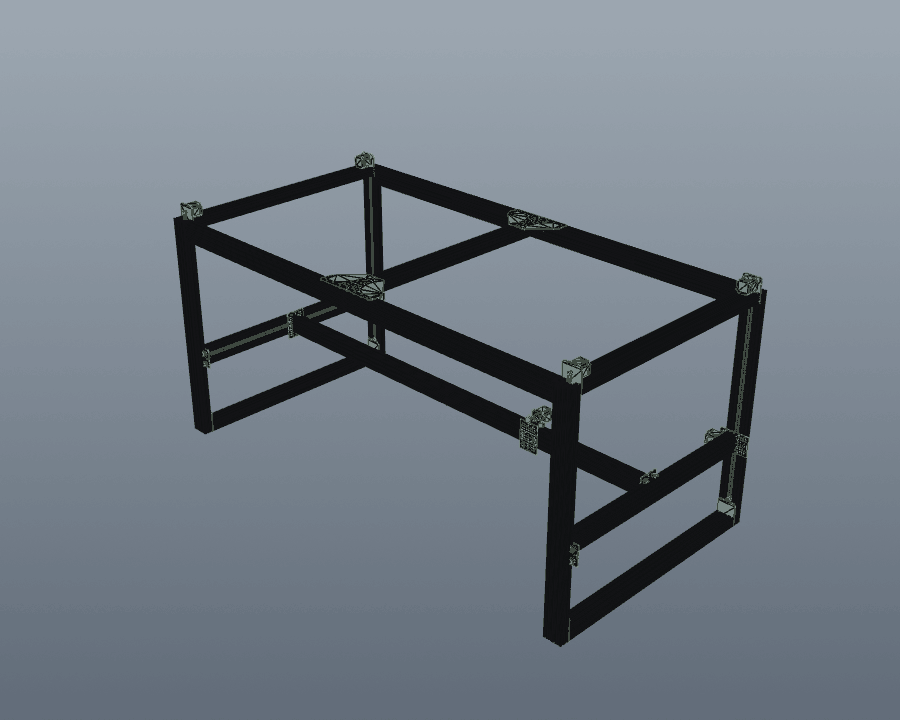

An automated check suite
for STEP assemblies.
Geometric checks, BOM-vs-CAD audit, and an honesty toolchain for STEP-based CAD. Like pytest for mechanical design — in spirit; CADCLAW reports findings with severity and a confidence budget rather than just pass/fail.
Open source · MIT · Python 3.10+ · No commercial CAD software required for CADCLAW's own checks
Numbers from the M3-CRETE deployment. CADCLAW catches problems your config tells it to look for; it doesn't certify designs.
CAD assemblies break silently.
Parts clip into each other. BOMs drift from geometry. A motor mount ends up 600 mm from the motor. Engineers catch these by eye — if they catch them at all. There is no pytest for CAD.
CADCLAW validates STEP assemblies through a chain of automated gates. A harness run passes only when every configured check passes.
Inventory
Missing or extra parts. Labels by bounding-box signature, counts against expected. Per-region (axis-aligned) constraints supported.
Interference
Solid-solid overlaps via BRep boolean intersection — not just bbox.
Adjacency
Parts that should be near each other but aren't. Catches the motor 600 mm from its mount.
Dimensional
Wrong thickness, swapped box() args, impossible dimensions.
Orientation
Expected face planes for labels that opt in through cadclaw.yaml.
Floating
Non-exempt parts isolated from configured structural labels beyond a max gap.
Color/material
STEP AP242 color metadata checked against expected label colors.
Kinematics
Beam deflection, motor torque budgets, belt tension, racking.
Tolerance
Worst-case, RSS, Monte Carlo stacking with Cpk and variance decomposition.
BOM audit
BOM JSON ↔ CAD assembly: qty, mfg_type, required/forbidden text terms, CAD-side count drift. Private fields never echoed.
Parity
STEP-vs-STEP comparison; flags the Fusion visibility-toggle bug (file shrinks but unique signatures grow).
Disassembly
Sequenced part removal, radial exploded views, animation frame export.
Render
STEP → PNG → animated GIF via offscreen VTK. Closes the loop to shareable visuals.
cadclaw doctor verifies your environment before MCP errors get opaque · cadclaw publish-audit stops private build BOMs from being committed · cadclaw claim-audit flags overclaims and untagged numeric assertions in your README and BOM notes. Configure once in cadclaw.yaml, run from the cadclaw CLI.
cadclaw itself can do.
What CADCLAW does NOT prove
CADCLAW checks the geometry of a STEP file, the JSON of a BOM, and the text of your README against rules you write. It does not prove:
- That the native CAD model (Fusion, SolidWorks, etc.) has no hidden or suppressed parts. CADCLAW reads the STEP export, which can silently drop invisible parts.
- That the physical build matches the CAD. CAD passing CADCLAW says nothing about whether the parts on your bench match the file.
- That a vendor part is in stock, available, or the price you assumed.
- That a printed part is strong enough for production use. CADCLAW's kinematics gates do bare-beam math; they don't simulate printed-PLA fatigue, layer adhesion, or thermal creep.
- That a structural claim is physically certified, unless you've attached measurement data with an evidence tag.
- That an AI-generated CAD change is correct without passing the gates. CADCLAW is the check; not passing it doesn't make a change correct, only "passed the gates we have."
Each report includes a confidence budget per gate: checked, not_checked, assumptions. Read it.
How it works
Every solid in a STEP file has a bounding box. The sorted dimensions (dx, dy, dz) rounded to 0.1 mm form a signature — a fingerprint that identifies part types without needing part names or metadata.
(40.0, 80.0, 1000.0) → "beam" # 4080 C-beam extrusion (56.4, 56.4, 76.6) → "motor" # NEMA23 stepper (4.0, 80.0, 96.0) → "mount" # motor mount plate
This works because mechanical parts have characteristic dimensions. A NEMA23 is always 56.4 mm square. A 4080 extrusion is always 40×80 mm. CADCLAW exploits this invariant to label, count, and validate without parsing STEP metadata.
Sample output
The render gate closes the loop from STEP validation to shareable visuals. One function call produces a radial explode, 360° orbit, and animated GIF — the same tool you run in CI.

99-part M3-CRETE assembly · render_radial_explode_gif("assembly.step", "out.gif") · zero manual animation
Quick start
pip install cadclaw
cadclaw doctor # 1. verify the environment
CLI workflow
Configure once in cadclaw.yaml — labels, expected inventory, regions, BOM rules, claim-audit terms, publish-audit globs — then drive everything from the cadclaw console script:
cadclaw harness --rules cadclaw.yaml # run configured YAML-backed checks cadclaw bom-audit --rules cadclaw.yaml # or run a single gate cadclaw publish-audit --rules cadclaw.yaml # before `git push` cadclaw claim-audit --rules cadclaw.yaml --report-format md -o report.md
Exit codes: 0 pass · 1 fail · 2 warn-only · 3 internal error.
BOM-vs-CAD audit (the v0.6 headline)
# cadclaw.yaml fragment bom_audit: bom_path: bom/data.json rules: - id: 5 expected_qty: 12 expected_label: connector_bar forbidden_terms: ["maximum rigidity", "primary stiffness"] - id: 65 expected_qty: 3 expected_unit: "bars (1.0m each)" expected_mfg_type: buy required_terms: ["1m", "friction-fit"] forbidden_terms: ["JB Weld", "West System", "custom 2m cut"]
Catches BOM qty / mfg_type / unit mismatches, required-term-missing or forbidden-term-present in the description, CAD-side count drift, and BOM items with no CAD geometry (suppressed for mfg_type: consumable / electronic / fastener). Private BOM fields (vendors, sku, unit_cost) are dropped at the serializer and never appear in any report.
Programmatic API
from cadclaw.harness import Harness from cadclaw.adjacency import AdjacencyRule h = Harness("my_assembly.step") h.add_inventory( labels={(40.0, 80.0, 1000.0): 'beam', (56.4, 56.4, 76.6): 'motor'}, expected={'beam': 4, 'motor': 2, 'belt': 3} ) h.add_interference(skip_labels={'belt', 'wheel'}) h.add_adjacency(rules=[ AdjacencyRule('motor', 'bracket', max_distance=50) ]) report = h.run() print(report)
CI/CD in any system
# .github/workflows/cad-check.yml - name: Validate assembly run: | pip install cadclaw cadclaw doctor cadclaw harness --rules cadclaw.yaml
Exit code 0 = passed. Exit code 1 = failed. Exit code 2 = warn-only.
Who it's for
Open-source hardware projects
Catch assembly errors before builders hit them.
CadQuery / FreeCAD users
The testing layer the open CAD ecosystem is missing.
Small manufacturing teams
Automated QA between design and procurement.
AI-assisted CAD workflows
Validate that AI-generated changes don't break the assembly.
Origin
CADCLAW was developed alongside the M3-CRETE open-source concrete 3D printer — built out of a practical need to properly position and validate components during assembly of a large, part-dense machine. Across that project the harness:
- Caught 53 solid-solid interferences in a single run
- Reduced STEP file size from 70 MB to 13 MB by identifying geometry bloat
- Validated 150+ assembly changes across 15 design sessions without visual inspection
- Prevented 3 regressions that would have shipped broken geometry to builders
Snapshot from CADCLAW's first production deployment on M3-CRETE, Q1 2026. Developed by Sunnyday Technologies.
Citation
If you use CADCLAW in published research or derivative work, please cite:
Sonnentag, N. (2026). CADCLAW: Automated validation framework for STEP-based CAD assemblies. Sunnyday Technologies. https://github.com/sunnyday-technologies/CADCLAW DOI: 10.5281/zenodo.19647391
A CITATION.cff file is included for automated citation tooling.